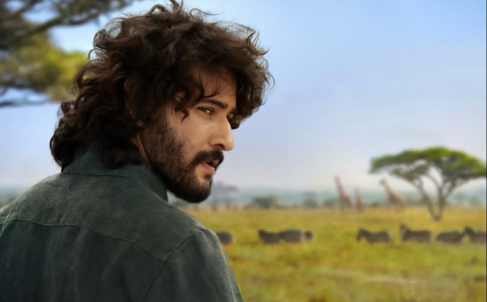

🔥 వారణాసి అప్డేట్పై మహేష్ ఫ్యాన్స్ ఫైర్.. అసలు ఏం జరిగింది?



వారణాసి మూవీ నుంచి ఇవాళ వచ్చిన అప్డేట్పై మహేష్ బాబు ఫ్యాన్స్లో అసంతృప్తి వ్యక్తమవుతున్నట్లు సోషల్ మీడియాలో చర్చ జరుగుతోంది. సినిమా నుంచి కొత్త అప్డేట్ వస్తుందని అభిమానులు ఎంతో ఆసక్తిగా ఎదురుచూస్తున్న సమయంలో, అప్డేట్ విషయంలో తమకు మరింత క్లారిటీ కావాలని కొందరు అభిమానులు అభిప్రాయపడుతున్నారు. ముఖ్యంగా సినిమా నుంచి వచ్చిన సమాచారం, ప్రచారంలో ఉన్న విషయాలపై ఫ్యాన్స్లో భిన్నమైన స్పందనలు కనిపిస్తున్నాయి.
రాజమౌళి దర్శకత్వంలో మహేష్ బాబు హీరోగా తెరకెక్కుతున్న సినిమా కావడంతో ‘వారణాసి’పై మొదటి నుంచే భారీ అంచనాలు ఉన్నాయి. ఈ సినిమాకు సంబంధించిన ప్రతి చిన్న విషయం కూడా సోషల్ మీడియాలో వైరల్ అవుతోంది. మహేష్ బాబు లుక్, ఆయన పాత్ర, సినిమా కథ, షూటింగ్, విడుదల తేదీ వంటి విషయాలపై అభిమానులు ఎప్పటికప్పుడు ఆసక్తిగా ఎదురుచూస్తున్నారు.
అయితే తాజాగా వచ్చిన అప్డేట్ విషయంలో కొంతమంది మహేష్ అభిమానులు నిరాశ వ్యక్తం చేస్తున్నట్లు వార్తలు వస్తున్నాయి. తమ అభిమాన హీరోకు సంబంధించిన అప్డేట్ మరింత ప్రత్యేకంగా, ఆసక్తికరంగా ఉండాలని ఫ్యాన్స్ కోరుకుంటున్నారు. సినిమా స్థాయి, రాజమౌళి దర్శకత్వం, మహేష్ బాబు క్రేజ్ను దృష్టిలో పెట్టుకుని మేకర్స్ నుంచి భారీ అప్డేట్స్ రావాలని అభిమానులు ఆశిస్తున్నారు.
ఇక రాజమౌళి సినిమా అంటేనే ప్రేక్షకుల్లో భారీ అంచనాలు ఉంటాయి. గతంలో ఆయన సినిమాల విషయంలో కూడా అప్డేట్స్ను చాలా జాగ్రత్తగా ప్లాన్ చేశారు. అందుకే ‘వారణాసి’ విషయంలో కూడా మేకర్స్ ఏ చిన్న విషయాన్ని బయటకు తీసుకొచ్చినా దేశవ్యాప్తంగా అభిమానులు, సినీ ప్రేక్షకులు ఆసక్తిగా గమనిస్తున్నారు.
మహేష్ బాబు అభిమానులు కూడా ఈ సినిమా కోసం చాలా కాలంగా ఎదురుచూస్తున్నారు. ముఖ్యంగా మహేష్ బాబు ఈ సినిమాలో ఎలాంటి పాత్రలో కనిపించబోతున్నారు, ఆయన లుక్ ఎలా ఉంటుంది, కథ ఏ నేపథ్యంలో సాగుతుంది అనే విషయాలపై అభిమానుల్లో ఆసక్తి రోజురోజుకూ పెరుగుతోంది.
సోషల్ మీడియాలో ప్రస్తుతం ‘వారణాసి’కి సంబంధించిన అనేక రకాల పోస్టులు, వార్తలు వైరల్ అవుతున్నాయి. అయితే వాటిలో ఏది నిజమైన సమాచారం, ఏది కేవలం ప్రచారం అనేది అధికారిక ప్రకటన వచ్చే వరకు స్పష్టంగా చెప్పలేం. అందుకే అభిమానులు కూడా అధికారికంగా మేకర్స్ నుంచి వచ్చే అప్డేట్ కోసం ఎదురుచూస్తున్నారు.
మహేష్ బాబు, రాజమౌళి కాంబినేషన్ కావడంతో ఈ సినిమాపై కేవలం టాలీవుడ్లోనే కాకుండా దేశవ్యాప్తంగా భారీ ఆసక్తి ఉంది. సినిమా నుంచి వచ్చే ప్రతి అప్డేట్ సోషల్ మీడియాలో ట్రెండ్ అయ్యే అవకాశం ఉంది. ఇలాంటి సమయంలో అభిమానుల అంచనాలకు తగ్గట్టుగా మేకర్స్ నుంచి మరింత ఆసక్తికరమైన సమాచారం వస్తుందా అనేది ఇప్పుడు చూడాలి.
మొత్తానికి ‘వారణాసి’పై ఇప్పటికే భారీ హైప్ ఉంది. సినిమా నుంచి వచ్చే ప్రతి అప్డేట్పై అభిమానులు ప్రత్యేకంగా దృష్టి పెడుతున్నారు. ప్రస్తుతం అప్డేట్ విషయంలో సోషల్ మీడియాలో జరుగుతున్న చర్చ ఎంతవరకు వెళ్తుంది, మేకర్స్ నుంచి తదుపరి అధికారిక సమాచారం ఎప్పుడు వస్తుంది అనేది వేచి చూడాలి.